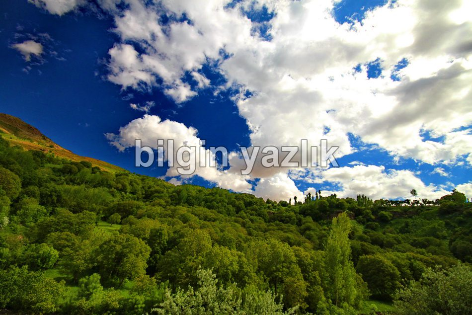
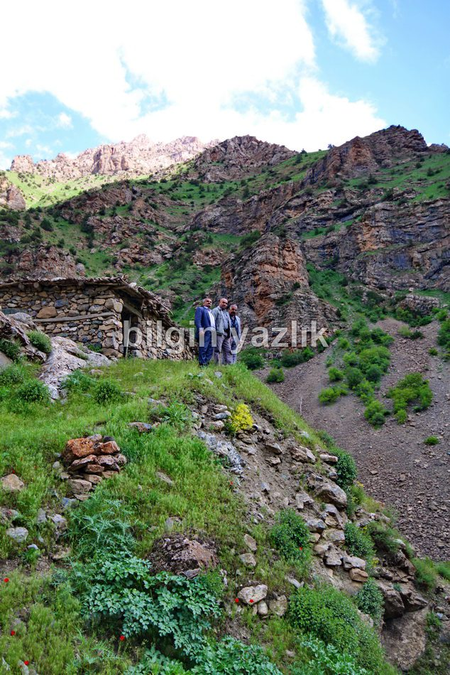
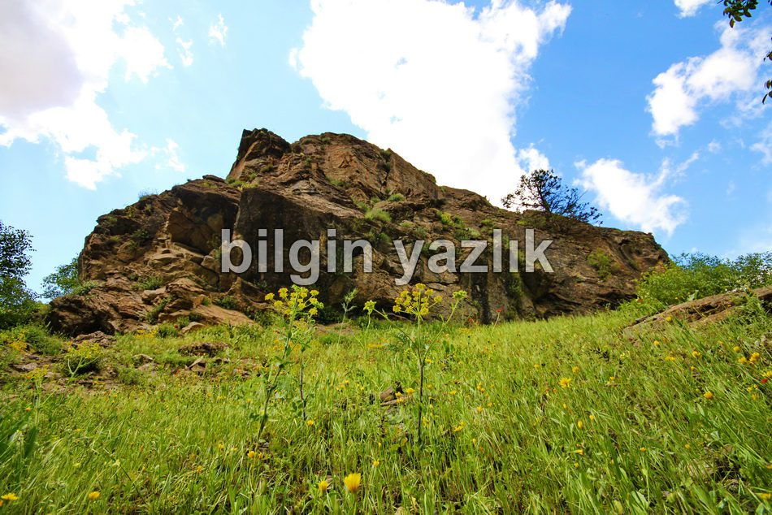
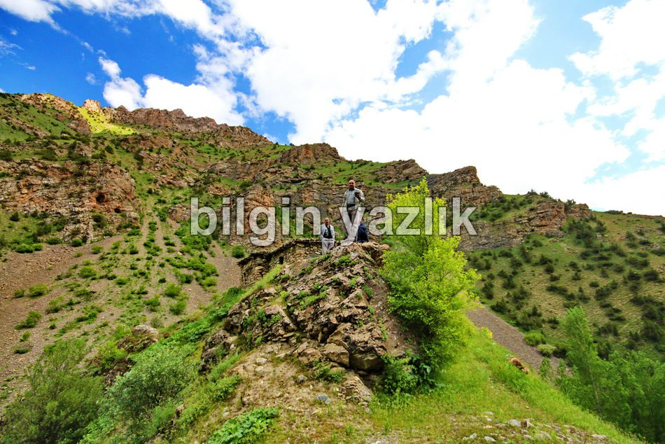
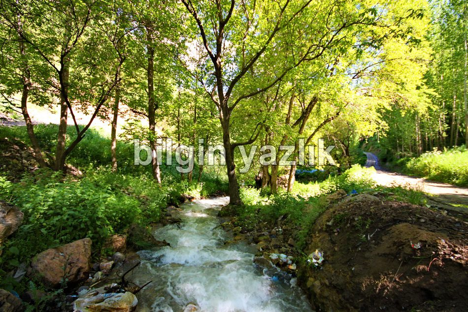
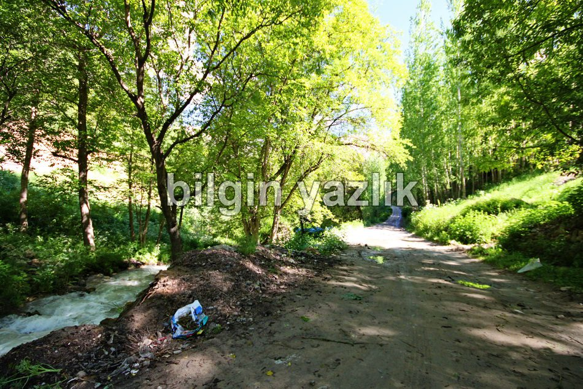
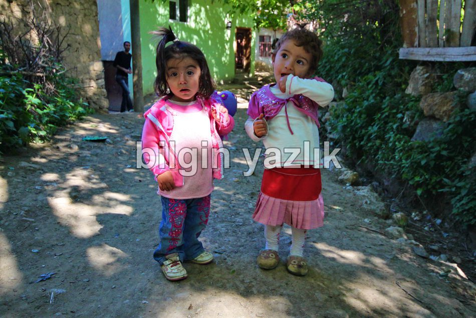
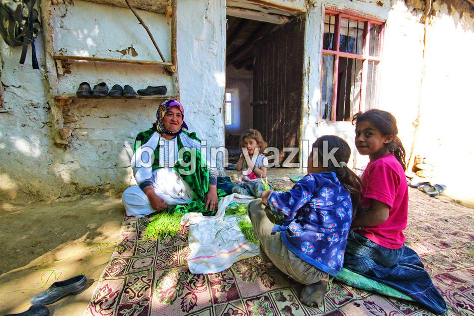

Van Gölü Havzası · 30 Mayıs 2013
Akrus Köyü
Eski adı yine Akrus olan bu mezra Çatak ilçesinin doğusunda Norduz çayının geçtiği vadi içerisinde yüksek bir tepede yer alıyor. Köylülerin anlattığına göre bu köyde eskiden ve hala Osman Begi aşireti yaşıyor. Köyün büyükçe bir de yaylası var. Yine köylülerin aktardıklarına göre eskiden Ermenilerle beraber yaşarlarmış ve köyde bugü üstüne bir ev inşa edilmiş bir de kilise varmış. Köyde çok sayıda ceviz ağacı yer alıyor. Dallarda dolaşan sincapları gördüm. Norduzda ise su samuru yaşadığını öğrendim. Köyün genel geçim kaynağı ceviz, tarım ve hayvancılık, köyde elektrik ve telefon var.








Bu yazı taliyol arşivinden taşınmıştır. · özgün kayıt